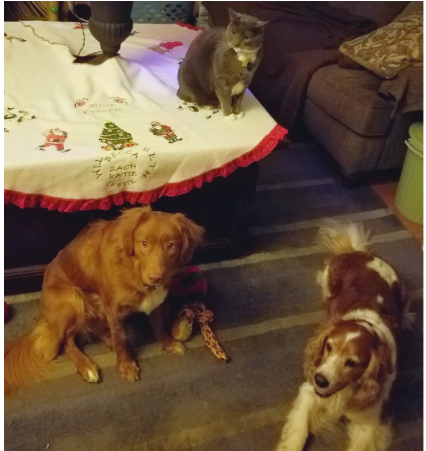

Pet pages: I have two dogs and a cat 
Purrfect Pet Plants:
For those who fear for their furry friends safety check out these plants that are great to have around
Plants that are safe for dogs
Marigolds are my favorite. The image of a marigold comes from shutterstock.com
DIY toys for destroyer dogs: My dog River just rips through every toy we get her, here are some DIY toys for your pet DIY Toys
Beds, Baskets, Cages and More: If you pet is growng or just in need of an upgrade here are some great pet homes Link
Change image every 3 seconds: